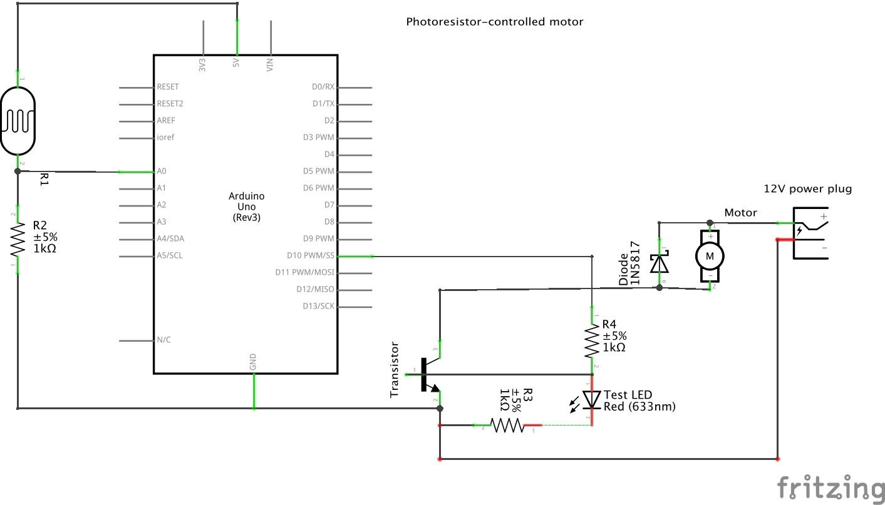

Colleen Carroll's Assignment 4!
I used a photoresistor to control a DC motor. The brighter it is, the faster the motor runs. There's also an LED connected to the output pin that I used for testing.
Operation

Schematic

Circuit

Firmware
/*
A4 - Colleen Carroll
Photoresistor-controlled Motor
The brighter the surroundings, the faster the motor spins.
*/
// the pin connected to the transistor's base and acting as a switch
const int PIN_OUT = 10;
int sensorValue = 0;
int outputValue = 0;
// the setup routine runs once when you press reset:
void setup() {
// initialize serial communication at 9600 bits per second:
Serial.begin(9600);
}
// the loop routine runs over and over again forever:
void loop() {
// read the input on analog pin 0 from the photoresistor
sensorValue = analogRead(A0);
// print out the value you read:
Serial.println(sensorValue);
// convert 10 bit analogRead value to 8 bit analogWrite value
outputValue = map(sensorValue, 0, 1023, 0, 255);
// write the output value to the transistor's base
// this allow current to the motor proportional to the
// brightness percieved by the photoresistor
analogWrite(PIN_OUT, outputValue);
// delay in between reads for stability
delay(1);
}